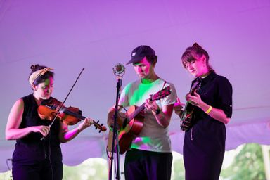

PaoliFest
Music. Art. Food. Community.
A free festival that brought nationally and internationally touring artists to the small town of Paoli, Indiana, to perform alongside local musicians and young artists.

Extraordinary art, rooted in Paoli.
PaoliFest was Let Music Speak’s flagship program and its largest undertaking: a free community music and arts festival built around the belief that exceptional artistic experiences belong everywhere.
From 2018 to 2023, the festival welcomed thousands of attendees and artists from across the country. Touring performers shared the stage with musicians and young artists from the region, creating a festival that was both outward-looking and unmistakably local.
PaoliFest through the years





A festival people helped create.
PaoliFest combined extraordinary performances with collaborative art-making, workshops, youth projects, food, and opportunities for artists and audiences to meet one another beyond the stage.
It was a direct challenge to the idea that great festivals require high ticket prices or large cities—and a celebration of what becomes possible when a community places shared creative experiences at its center.

PaoliFest: Echoes
PaoliFest: Echoes carries the festival’s spirit forward through concerts, visiting artists, creative collaborations, and community outreach throughout Southern Indiana.